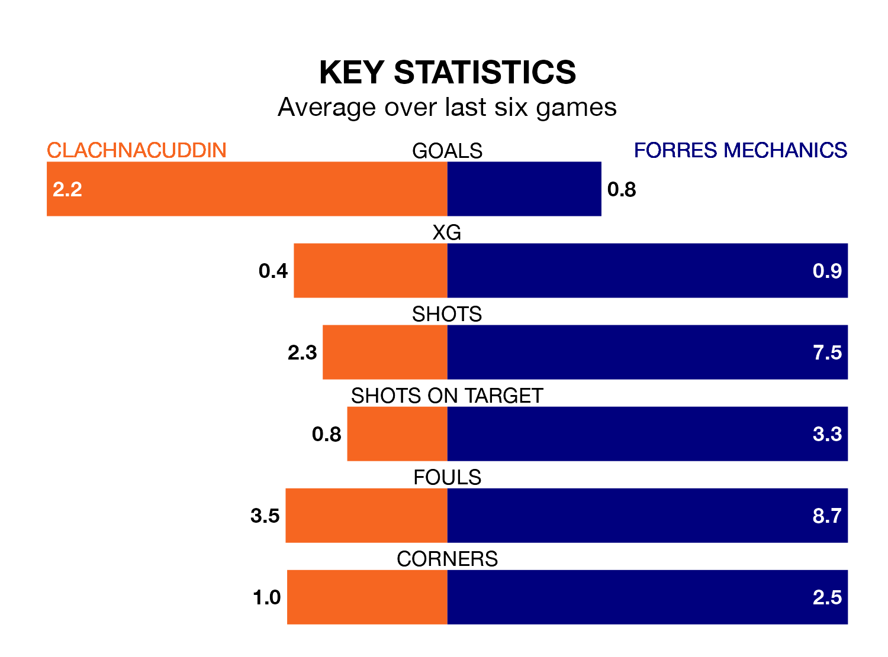

Forres Mechanics make the journey to Grant Street Park to play Clachnacuddin on late Wednesday looking to pick up points to end their three-game losing streak.
Forres Mechanics's struggles have left them with just four points from their last six Highland Football League matches, while their opponents have earned five from a possible 18.
Clachnacuddin are 16th in the table after 23 games, of which they have won two and drawn six, earning 12 points.
Forres Mechanics are three places ahead of the hosts in 13th, with four wins and four draws putting them on 16 points.
In the last 10 years, Clachnacuddin and Forres Mechanics have played each other on 13 occasions. Clachnacuddin won three of them, Forres Mechanics seven, and they drew three times.
On average, Clachnacuddin scored 1.1 goals and Forres Mechanics 2.1 in those matches.
Their last meeting was on October 11, when they played out a 1-1 draw.
With 22 goals in 19 games so far this season, the away side are the league's second-lowest scorers with 1.2 goals per game. And they are conceding at an average rate, letting in 36 goals at a rate of 1.9 per game.
Clachnacuddin are also below average scorers, with 1.4 goals per game, compared to a league average of 1.9. They have conceded 3.0 goals per game.
Clachnacuddin's last match was on Saturday, a 4-2 loss against Huntly.
Forres Mechanics lost 2-1 against Fraserburgh last time out, also on Saturday.
Updated: 10:28 (UTC), 06/02/24